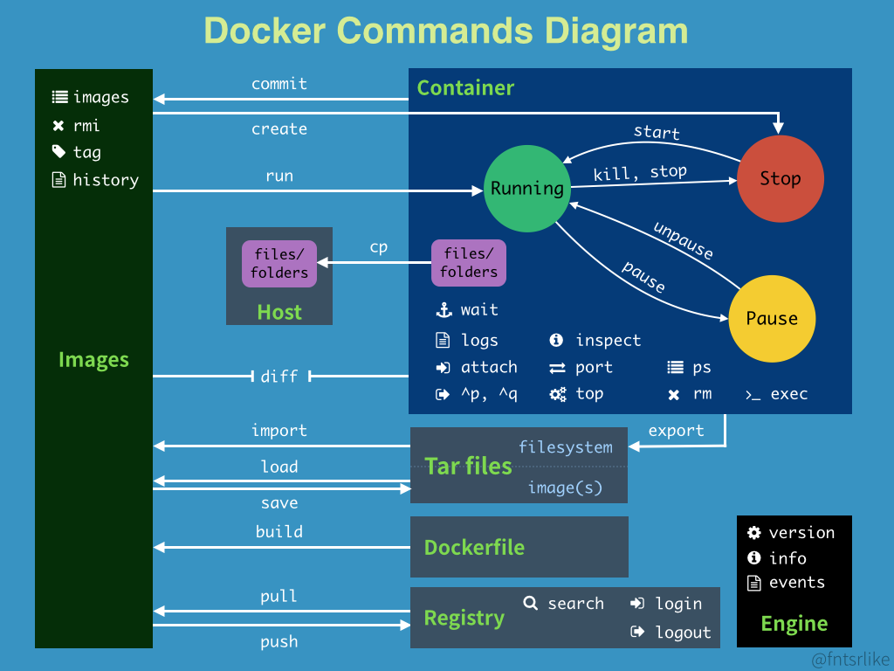

常用命令
1
2
3
4
5
6
7
8
9
10
11
12
13
14
15
16
17
18
19
20
21
22
23
24
25
26
|
docker images #显示本地镜像
docker search mysql #查询mysql镜像，或者访问网址 https://hub.docker.com/explore/
#常用镜像 openjdk8 python tomcat nginx mysql mongo redis rabbitmq
docker pull mysql #下载mysql镜像
docker rmi image_id/image_name #删除镜像
docker image build -t my_image . # 编译Dockfile文件
docker ps #列出正在运行的容器
docker ps -a #列出所有容器
docker inspect -f='{{.Name}} {{.NetworkSettings.IPAddress}} {{.HostConfig.PortBindings}}' $(docker ps -aq) #docker列出所有容器ip及端口信息
docker run -it --name my_container image_id/image_name #创建并启动并进入容器终端，退出则容器停止
docker run -p 80:80 -v /web:/web --name my_container -d image_id/image_name #后台创建并启动容器，指定-p端口、-v磁盘目录映射，冒号前为宿主机
docker exec -it container_id/container-name /bin/bash #进入容器终端
docker start container_id/container_name #启动容器
docker stop container_id/container_name #停止容器
docker restart container_id/container_name #重启容器
docker rm container_id/container_name #删除容器
docker rm $(docker ps -a -q) #删除所有运行结束了容器, 正在运行的容器不会被删除
docker top container_id/container_name #查看容器内的进程
docker logs [-f] [-t] [--tail string] 容器名 #查看容器的日志输出, -f是打开跟踪, -t是加上时间戳
docker search nginx, 在hub站点中搜索 nginx 镜像
docker image inspect image_id #显示指定镜像的详细信息.
docker container inspect container_id/container-name 命令, 显示指定容器的详细信息,包括容器的Ip
docker images -f dangling=true 命令, 列出没有被容器化的镜像
docker rmi $(docker images -qf dangling=true) #删除那些没有被容器化的镜像
docker system df #可以一次性查看镜像/容器/host volume的磁盘占用情况.
docker ps -s #输出容器的空间占用
|
推送阿里云镜像
1
2
3
|
docker login --username=wu_ton-g@foxmail.com registry.cn-hangzhou.aliyuncs.com
docker tag c059bfaa849c registry.cn-hangzhou.aliyuncs.com/phoenixtree/poplar:0.1
docker push registry.cn-hangzhou.aliyuncs.com/phoenixtree/poplar:0.1
|
mysql7
1
2
|
docker pull centos/mysql-57-centos7
docker run -id --name=mysql -p 3306:3306 -e MYSQL_ROOT_PASSWORD=root centos/mysql-57-centos7
|
rocketmq
1
2
3
4
5
6
7
8
9
10
11
12
13
14
15
16
17
|
#rocketmq镜像获取
docker pull foxiswho/rocketmq:server-4.5.1
docker pull foxiswho/rocketmq:broker-4.5.1
#rocketmq启动
docker run -id -p 9876:9876 --name=rmqs -e "JAVA_OPT_EXT=-server -Xms128m -Xmx128m -Xmn128m" -e "JAVA_OPTS=-Duser.home=/opt" foxiswho/rocketmq:server-4.5.1
docker run -id -p 10911:10911 -p 10909:10909 --name=rmqb -e "JAVA_OPTS=-Duser.home=/opt" -e "JAVA_OPT_EXT=-server -Xms128m -Xmx128m -Xmn128m" foxiswho/rocketmq:broker-4.5.1
#主机上需要修改添加 NAMESRV_ADDR /etc/profile
export NAMESRV_ADDR=172.17.0.3:9876
#rmqbroker容器需要配置 rmqserver ip地址
vi /etc/rocketmq/broker.conf
brokerIP1=172.17.0.3
namesrvAddr=192.168.17.130:9876
#rocketmq测试
sh tools.sh org.apache.rocketmq.example.quickstart.Producer
sh tools.sh org.apache.rocketmq.example.quickstart.Consumer
#rocketmq web管理工具
docker run -id --name=rmqweb -e "JAVA_OPTS=-Drocketmq.namesrv.addr=192.168.17.130:9876 -Dcom.rocketmq.sendMessageWithVIPChannel=false" -p 8080:8080 docker.io/styletang/rocketmq-console-ng
|
docker 基础镜像环境 alpine
在hub官网会经常能看到 alpine 字样, alpine 是要给非常轻量级的Linux发行版,Docker官方已经推荐使用alpine 代替之前的 Ubuntu作为基础镜像环境, 好处是制作出的最终镜像文件很多, 但docker dub上目前仍以 Ubuntu 为主流的基础镜像环境.
下面是几个常用发行版基础镜像的大小.
REPOSITORY TAG IMAGE ID VIRTUAL SIZE
alpine latest 4e38e38c8ce0 5 MB
debian latest 4d6ce913b130 90 MB
ubuntu latest b39b81afc8ca 200 MB
centos latest 8efe422e6104 250 MB
alpine 内置apk包管理器, 而不是Ubuntu的apt, alpine包的网址是 https://pkgs.alpinelinux.org/packages